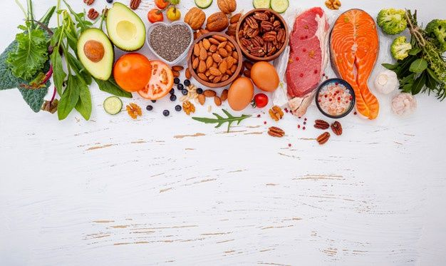

Food Tips :
Food : substance consisting essentially of protein, carbohydrate, fat, and other nutrients used in the body of an organism to sustain growth and vital processes and to furnish energy. The absorption and utilization of food by the body is fundamental to nutrition and is facilitated by digestion. Plants, which convert solar energy to food by photosynthesis, are the primary food source. Animals that feed on plants often serve as sources of food for other animals. To learn more about the sequence of transfers of matter and energy in the form of food from organism to organism, see food chain.
It's easy to wonder which foods are healthiest. A vast number of foods are both healthy and tasty. By filling your plate with fruits, vegetables, quality protein sources, and other whole foods, you'll have meals that are colorful, versatile, and good for you.
Some different Categories of food as follow :
1] Fruits and berries :
Fruits and berries are among the world's most popular health foods.
These sweet, nutritious foods are very easy to incorporate into your diet because they require little to no preparation.
I. Apples
Apples are high in fiber, vitamin C, and numerous antioxidants. They are very filling and make the perfect snack if you find yourself hungry between meals.
Apples are considered nutrient-dense fruits, meaning they provide a lot of nutrients per serving.
One medium 7-ounce (200-grams) apple offers the following nutrients :
- Calories: 104
- Carbs: 28 grams
- Fiber: 5 grams
- Vitamin C: 10% of the Daily Value (DV)
- Copper: 6% of the DV , Potassium: 5% of the DV , Vitamin K: 4% of the DV
- Learn How to Attract What You Desire in Life.
The same serving also provides 2-5% of the DV for vitamins E, B1, and B6.
II. Avocados
Avocados are different from most other fruits because they're loaded with healthy fats instead of carbs. They are not only creamy and tasty but also high in fiber, potassium, and vitamin C.
Avocados are high in a number of important nutrients, many of which are lacking in modern diets.
Here is the nutrition breakdown for a 7-ounce (201-gram) avocado :
- Calories: 322
- Fat: 30 grams
- Protein: 4 grams
- Carbs: 17 grams
- Fiber: 14 grams
- Vitamin C: 22% of the daily value (DV) , Vitamin K: 35% of the DV , Vitamin E: 28% of the DV
- Riboflavin (B2): 20% of the DV , Niacin (B3): 22% of the DV , Pantothenic acid (B5): 56% of the DV , Pyridoxine (B6): 30% of the DV , Folate: 41% of the DV , Magnesium: 14% of the DV , Potassium: 21% of the DV , Copper: 42% of the DV , Manganese: 12% of the DV.
As you can see, avocados are exceptionally nutritious fruits and are a concentrated source of healthy fats and fiber, plus a number of vitamins and minerals.
III. Bananas
Bananas are among the world's best sources of potassium. They're also high in vitamin B6 and fiber and are convenient and portable
Bananas contain a fair amount of fiber and several antioxidants. One regular-sized banana (126 grams) also boasts
- Calories: 112
- Fat: 0 grams
- Protein: 1 gram
- Carbs: 29 grams
- Fiber: 3 grams
- Vitamin C: 12% of the Daily Value (DV)
- Riboflavin: 7% of the DV , Folate: 6% of the DV , Niacin: 5% of the DV , Copper: 11% of the DV , Potassium: 10% of the DV , Magnesium: 8% of the DV.
IV. Oranges
Oranges are well known for their vitamin C content. What's more, they're high in fiber and antioxidants.
Citrus fruits are an excellent source of vitamin C, a nutrient that strengthens the immune system and keeps your skin smooth and elastic.
In fact, just one medium orange has all the vitamin C you need in a day.
Citrus fruits also have good amounts of other vitamins and minerals that your body needs to function properly, including B vitamins, potassium, phosphorous, magnesium and copper.
Additionally, they are rich in plant compounds that have various health benefits, including anti-inflammatory and antioxidant effects.
These compounds include over 60 varieties of flavonoids, carotenoids and essential oils, and they are responsible for many of citrus fruit's health benefits.
Other healthy fruits and berries include cherries, grapes, grapefruit, kiwi, lemons , mangoes, melons, olives, peaches, pears, pineapples, plums, and raspberries.
2] Eggs :
Eggs are among the most nutritious foods on the planet.
They were previously demonized for being high in cholesterol, but new studies show that theyre perfectly safe and healthy
A single large boiled egg contains :
- Vitamin A: 6% of the RDA
- Folate: 5% of the RDA
- Vitamin B12: 9% of the RDA
- Vitamin B5: 7% of the RDA
- Vitamin B2: 15% of the RDA/li>
- Phosphorus: 9% of the RDA
- Selenium: 22% of the RDA
- Eggs also contain decent amounts of vitamin D, vitamin E, vitamin K, vitamin B6, calcium and zinc.
This comes with 77 calories, 6 grams of protein and 5 grams of healthy fats.
Eggs also contain various trace nutrients that are important for health.
3] Meats
Lean beef is among the best sources of protein when consumed in moderation and is loaded with highly bioavailable iron.
Chicken breast is low in fat and calories but extremely high in protein. It's a great source of many nutrients. Again, feel free to eat fattier cuts of chicken if you're not eating many carbs.
Lambs are usually grass-fed, and their meat tends to be high in omega-3 fatty acids.
